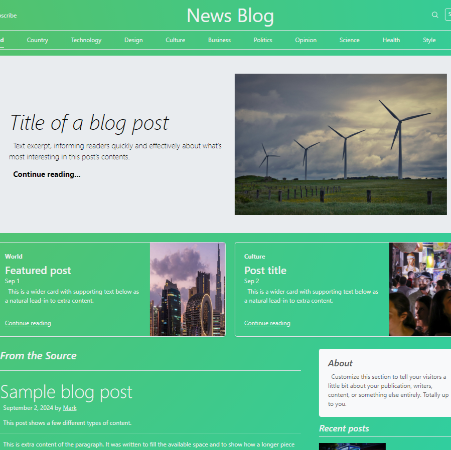
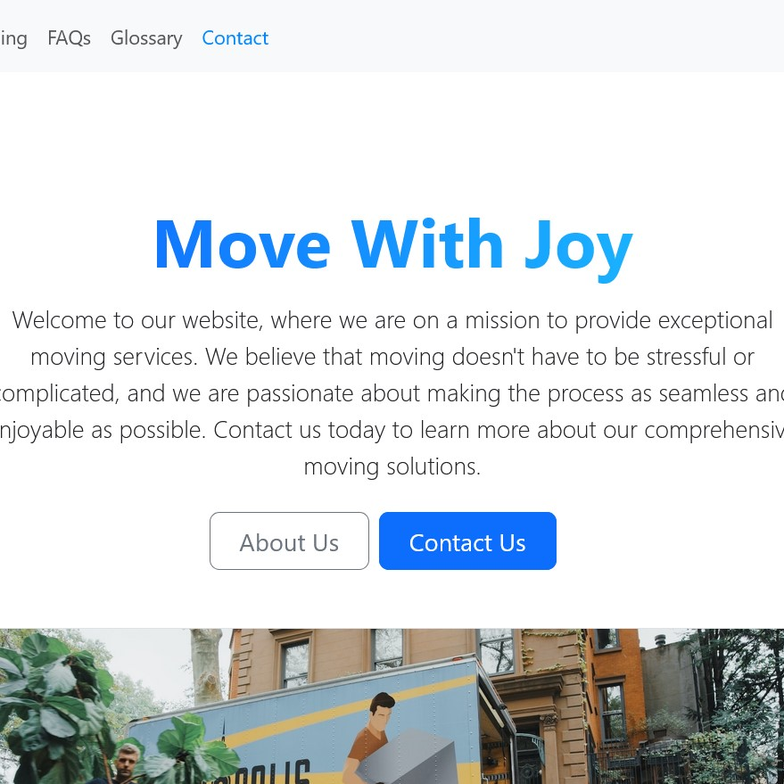
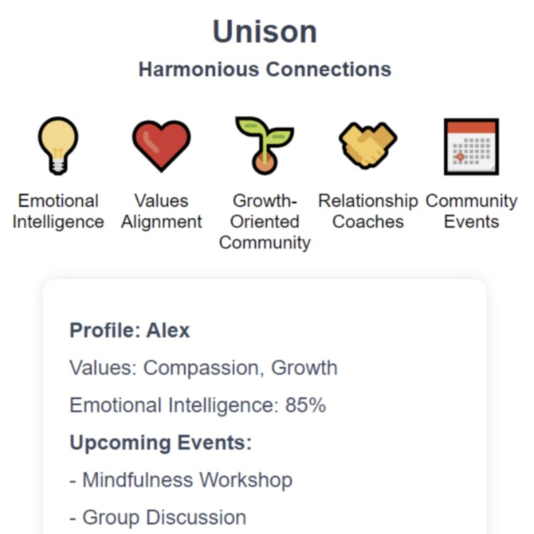

Hello, I'm
Vladislav Kazantsev
Senior Technical Writer & Documentation Engineer
Years of commercial experience in IT (since 2019)
RESTful APIs, PostgreSQL, Git, Markdown, Node.js, Express
Hello, I'm
Senior Technical Writer & Documentation Engineer
Years of commercial experience in IT (since 2019)
RESTful APIs, PostgreSQL, Git, Markdown, Node.js, Express
Get To Know More
: financial technologies, server firmware, and traffic management.
Technological university graduate
with multidisciplinary
technical certifications.
Located in Belgrade, Serbia with permanent residence permit and unrestricted legal work authorization. Immediately available. Open to remote, hybrid, on-site roles, and relocation opportunities.
I'm a product-minded technical writer and documentation engineer who treats documentation as a strategic product category. I architect web solutions that solve real problems for engineering teams and users. With , I've authored hundreds of interactive technical documents (API references, implementation guides, architectural descriptions, operational articles, configuration instructions, etcetera) and built the infrastructure that served them to internal teams and external users. Documentation platforms are where my technical depth meets my user-empathy focus (information architecture, UX, discoverability).
I create and maintain clear, highly accurate, comprehensive technical documentation that increases user engagement, reduces support costs, and enables engineering teams to scale efficiently.
Docs-as-Code infrastructure keeps documentation synchronized with product releases while helping teams minimize context switching and focus on their tasks. I design these systems end-to-end: planning, writing, publishing content, and continuously improving existing documentation.
I define and maintain documentation standards, then conduct pull-request reviews to ensure consistent quality across the team. Through mentoring and code reviews, I help specialists internalize documentation discipline and best practices.
My approach to documentation bridges deep technical expertise with user empathy. I maintain and improve documentation portals, working to grow their traffic and usefulness through thoughtful information architecture and discoverability enhancements. Through this work, I've learned that exceptional documentation is an engineering discipline, one that requires infrastructure thinking and cross-team coordination to produce maintainable, discoverable documentation that engineers trust and users understand.
I design scalable products, whether interactive applications, documentation platforms, or content systems. My approach combines deep attention to data modeling, interface design, and information architecture with consistent UX/UI principles: logical structure, searchability, discoverability, accessibility, and maintainability.
I architect systems with attention to details, thinking through performance, extensibility, and how users will actually interact with the product at scale. I leverage modern stacks (JavaScript, Node.js, Express, PostgreSQL) and methodologies (Git-based, Markdown-focused workflows, RESTful APIs, responsive design) to deliver production-ready solutions.
Collaboration and teamwork with various stakeholders allows me to ensure products evolve with user needs.
I stay current with evolving standards, tools, and methodologies, particularly at the intersection of technical writing and engineering: Git-based workflows, pull-request reviews, API design, mentoring, etcetera. This commitment to continuous improvement means I lead by example: I evaluate new tools and try emerging technical practices that accelerate team velocity and knowledge-sharing.
Let's talk, whether you're building products, scaling teams, or transforming how your organization shares technical knowledge.
If you need professional solutions, contact me. I'm sure my expertise can help you.
Explore My
Browse My Recent



